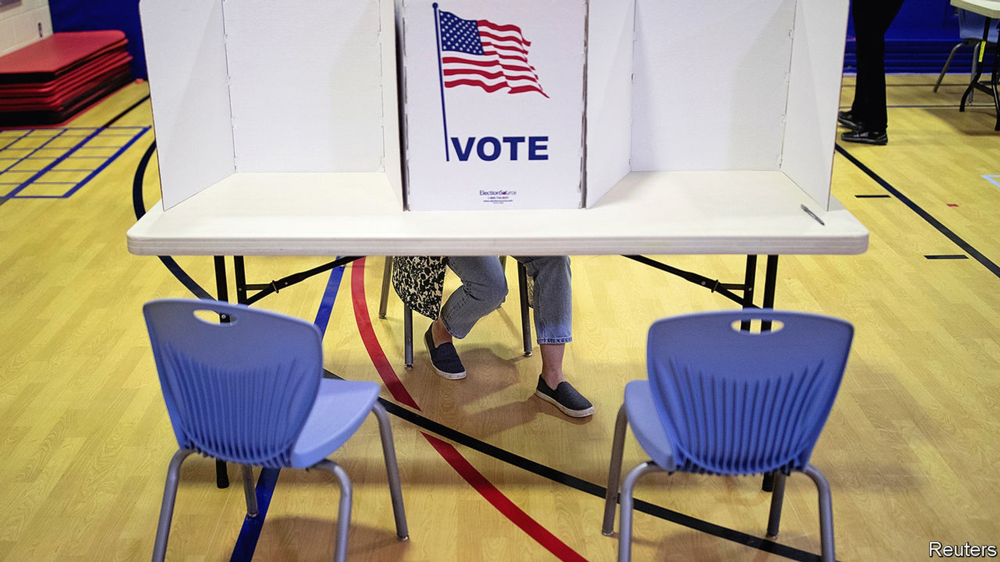
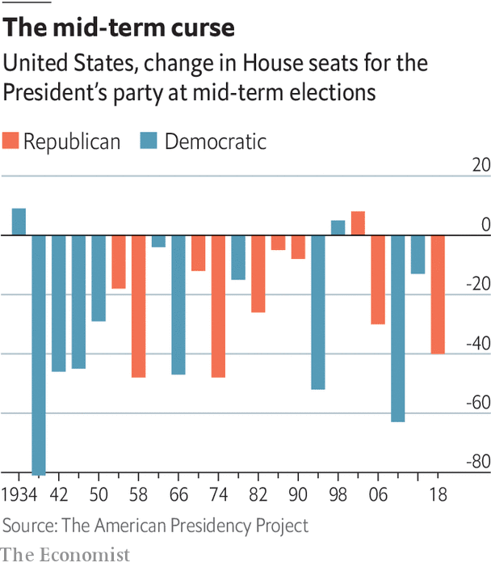

Polls show voters are ideologically much further apart than ever

There are few stronger patterns in American politics than the tendency for the ruling party to lose ground in the first mid-term elections after taking the White House. In 2018 such a pattern produced a “blue wave” of backlash to Donald Trump’s presidency, and Democrats wrestled 40 seats from the Republicans. In 2022 Joe Biden is likely to oversee a similarly disappointing performance for his party. Such is the mid-term curse.
Several indicators point in this direction. The first is history. Between 1934 and 2018, according to the American Presidency Project at the University of California Santa Barbara, the party controlling the White House lost an average of 28 seats in the House of Representatives. They lost seats in all but three of the last 22 mid-term cycles, that is 86% of the time. The pattern is weaker in the Senate, where the ruling party lost an average of four seats since 1934. It lost seats in the Senate in 68% of mid-terms.

Next, there’s polling. The Economist’s analysis of this cycle’s “generic ballot” polls, which ask Americans who they are going to vote for in their congressional district every other November, puts support for the Democrats at 51.7% of all votes for the two major parties—precisely the share of the popular vote that they won in 2020. This would portend good fortune for the Democrats if it were November 2022, but unfortunately for America’s liberals, there is a tendency for the ruling party to lose ground in the year before the actual election. The ruling party’s share of the two-party vote has shrunk by an average of 3.4 percentage points since the 1942 mid-terms.
Polls show that voters are further apart ideologically than they used to be
Based on this relationship alone, the Democrats would be expected to win roughly 48% of the House popular vote in 2022, and would almost certainly lose their current eight-seat majority with such a performance. However, there is uncertainty in the historical relationship between the polls. Our model suggests that the Democrats could win as much as 55% or as little as 41% of the vote on the day of the mid-terms in 2022. That works out to roughly a one-in-three chance of their gaining enough votes to win.
Election-watchers should take one other indicator into account: polarisation. Polls show that voters are further apart ideologically, and less likely to swing between parties, than they used to be. As a result, large swings in the electorate’s support for the ruling party may be less likely than in the past. Add this factor into our model, and the Democrats’ predicted vote share rises by roughly half a percentage point to 48.5%—although uncertainty in the estimate also increases. Such a bonus would make little difference if the polls follow the historical pattern of a 3-4 point defeat for the Democrats. But it could be decisive in a closer race. In America’s current era of hyper-competitive elections, small changes like this can make big differences.
G. Elliott Morris: Data journalist, The Economist, Washington, DC■
This article appeared in the United States section of the print edition of The World Ahead 2022 under the headline “The road to gridlock”